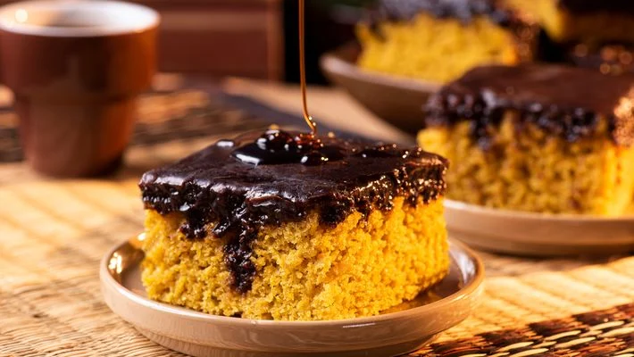
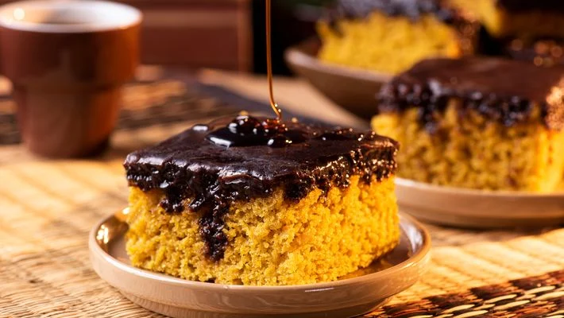
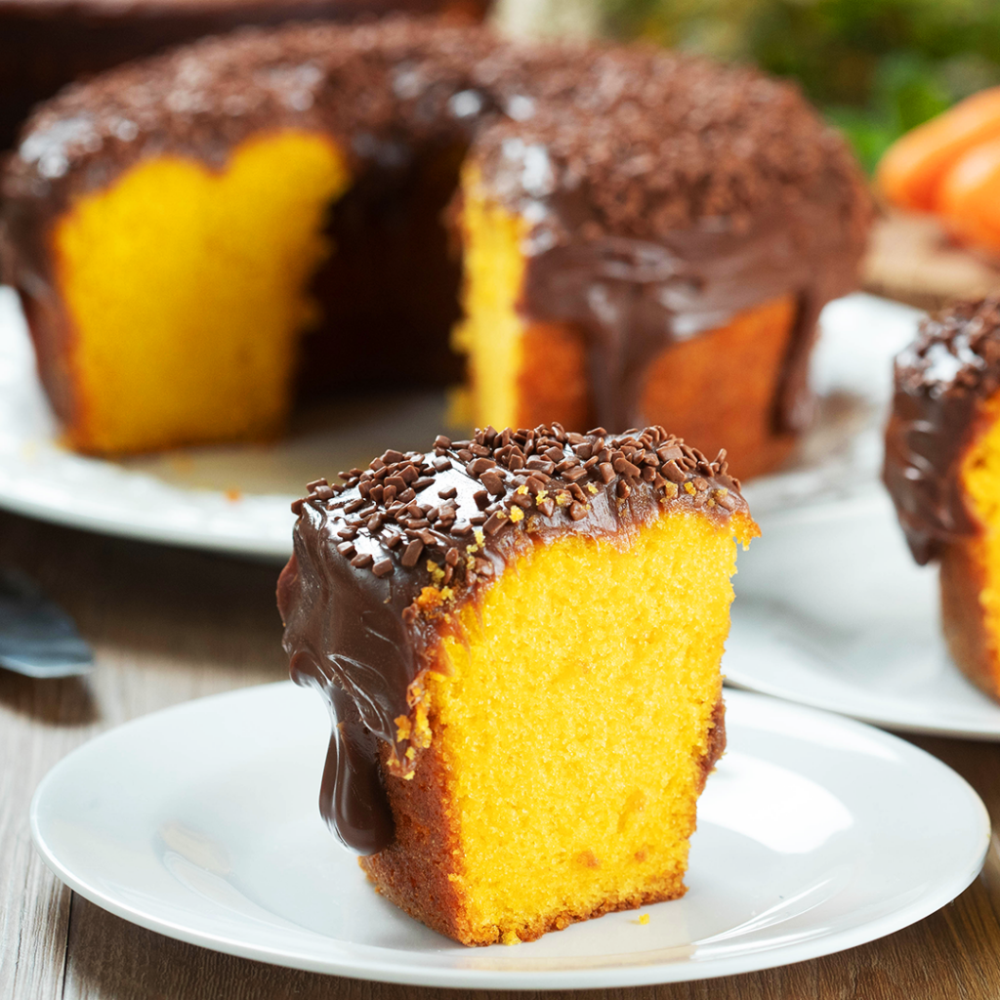
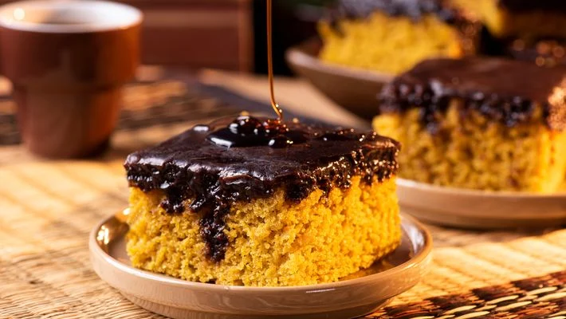

Vários Bolo de Cenoura caseiros cobertos de Chocolate
Uma receita clássica e deliciosa, pronta em poucos minutos!
 
Vários Bolo de Cenoura caseiros cobertos de Chocolate
3 cenouras médias descascadas e picadas
4 ovos
1 xícara (chá) de óleo
2 xícaras (chá) de açúcar
2 e 1/2 xícaras (chá) de farinha de trigo
1 colher (sopa) de fermento em pó
1 colher (sopa) de manteiga
3 colheres (sopa) de chocolate em pó
1 xícara (chá) de açúcar
5 colheres (sopa) de leite
No liquidificador, coloque as cenouras picadas, os ovos e o óleo. Bata até formar uma mistura cremosa e homogênea.
Transfira a mistura para uma tigela e acrescente o açúcar. Mexa bem com uma colher ou fouet.
Adicione a farinha de trigo aos poucos, misturando bem até a massa ficar uniforme.
Coloque o fermento em pó e mexa delicadamente com uma espátula, apenas para incorporar.
Despeje a massa em uma forma untada e enfarinhada (preferência para forma retangular). Leve ao forno preaquecido a 180 °C por cerca de 40 minutos. Faça o teste do palito: se sair limpo, o bolo está pronto.
Em uma panela, coloque a manteiga, o chocolate em pó, o açúcar e o leite.
Leve ao fogo médio, mexendo sempre, até ferver e engrossar levemente (aproximadamente 5 minutos).
Despeje a cobertura quente sobre o bolo ainda morno e espalhe com uma colher.
Peneire a farinha e o açúcar para um bolo mais fofinho.
Use cacau 100% no lugar do chocolate em pó para um sabor mais intenso.
Adicione granulado por cima da cobertura para um toque especial.
Espere o bolo esfriar antes de cortar, para manter a textura.
Você pode congelar porções individuais por até 30 dias.
© 2025 - Feito por Miguel Lopes